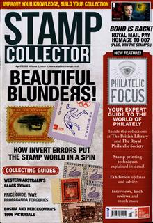

Essential Stamp Supplies
This section addresses all of the stamp supplies essential to pursuing the hobby, whether one is a beginner or an advanced philatelist.
In comparison, say someone wanted to start playing golf. They would need to buy golf clubs, a bag with a wheel cart, shoes, golf balls, tees, etc. And then there are the course fees, every time you play. Things aren't cheap these days, but without these necessities, one would have a very difficult time trying to play golf. And, other than sore muscles, a sunburn, and an empty wallet, what do you have to show for it afterward? Let's move on to stamp collecting and essential supplies!
Fortunately, the supplies required for stamp collecting are MUCH cheaper than golf supplies! In order to pursue stamp collecting it is absolutely essential to have the proper tools to handle your stamps, the means to house and display your stamps, the tools to correctly identify older stamps, and reference catalogs to assist in identifying, arranging, valuing, buying, or selling your stamps.
The essential tools you will need are stamp hinges or mounts, stamp tongs, magnifying glass, glassine envelopes, watermark detector, a perforation gauge, a stamp catalog for the particular area being collected, and a stamp album or stockbook to house your stamps.
Information on stamp albums and stamp catalogs will be found in other sections of this site. Stamp hinges, stamp mounts, stamp tongs, magnifying glasses, watermark detectors, perforation gauges, and glassine envelopes will be discussed in detail in the links listed at the right. Please click on the links to review each of these articles. Though the description of these varied supplies is pretty straightforward, their misuse can damage or destroy your valuable stamps. Thus, instruction on the proper way to use all of them is essential.
eBay Auction and Store Links
Stamp Supplies
The following links feature category-focused affiliated seller listings on various eBay sites worldwide. They may enable visitors to shop for and to buy specific items for the particular collecting subject they've just read about.
The affiliated eBay seller auction and store lots provided by eBay, Inc. are not the responsibility of the management of this website.
eBay-US-Stamps-Publications & Supplies (Stamp Tongs)
eBay-US-Stamps-Publications & Supplies (Stamp Hinges)
eBay-US-Stamps-Publications & Supplies (Stamp Mounts)
eBay-US-Stamps-Publications & Supplies (Perforation Gauge)
eBay-US-Stamps-Publications & Supplies (Watermark Tray)
eBay-US-Stamps-Publications & Supplies (Magnifying Glass)
eBay-US-Stamps-Publications & Supplies (Glassine Envelopes)
Return to Home from Essential Stamp Supplies


Essential
Supplies
Page Links
Stamp Tongs
Stamp Hinges
Stamp Mounts
Perforation Gauge
Watermark Tray
Magnifying Glass
Glassine Envelopes
